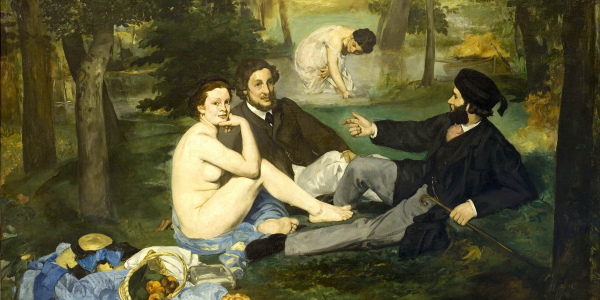
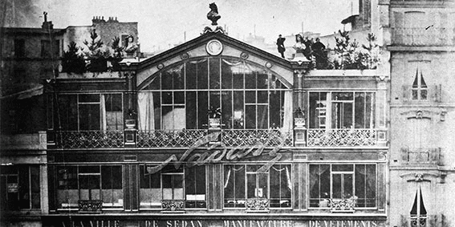
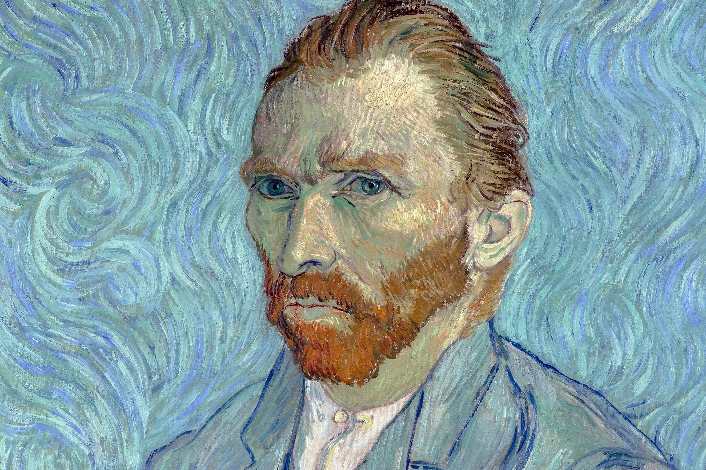
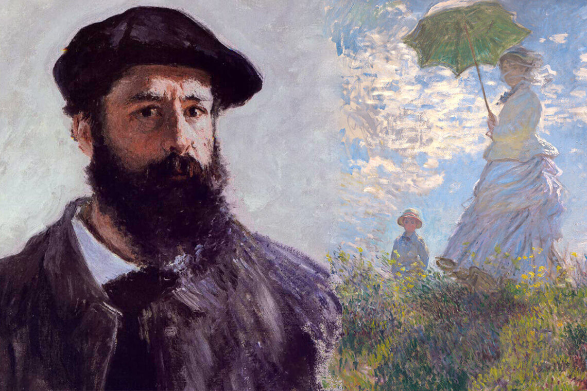
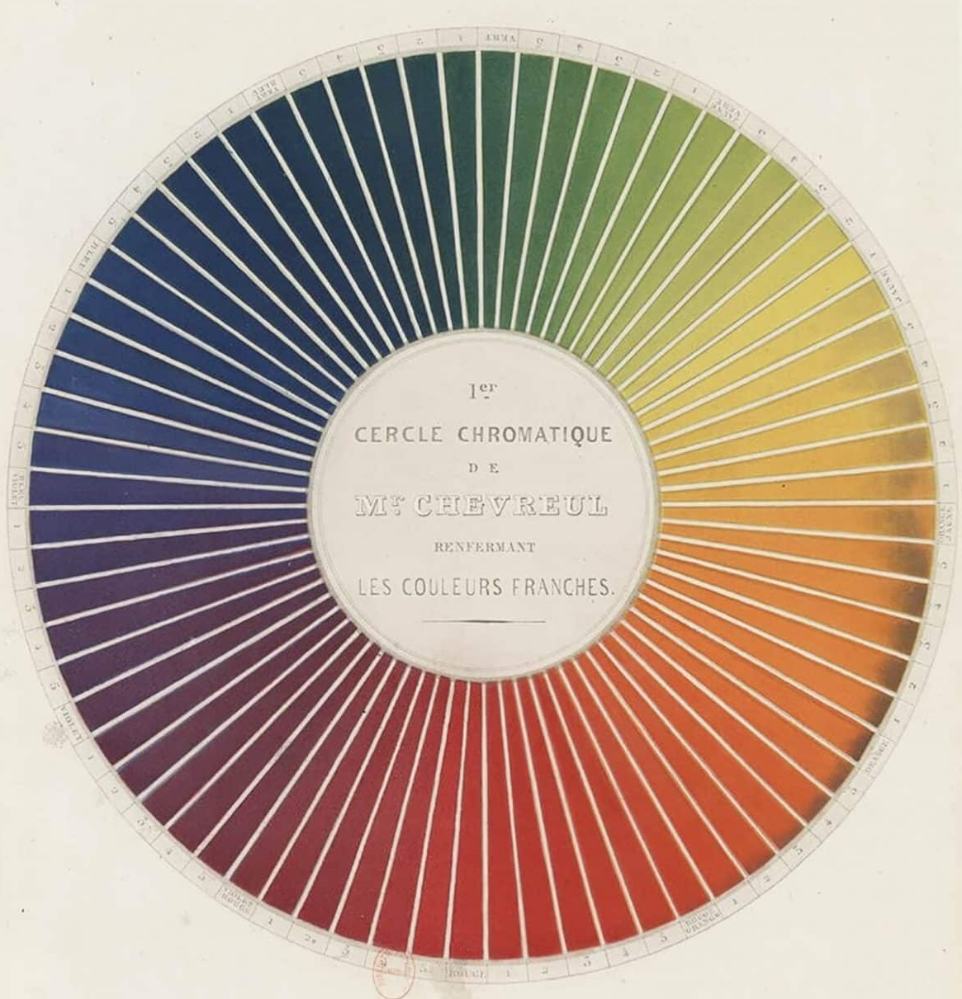
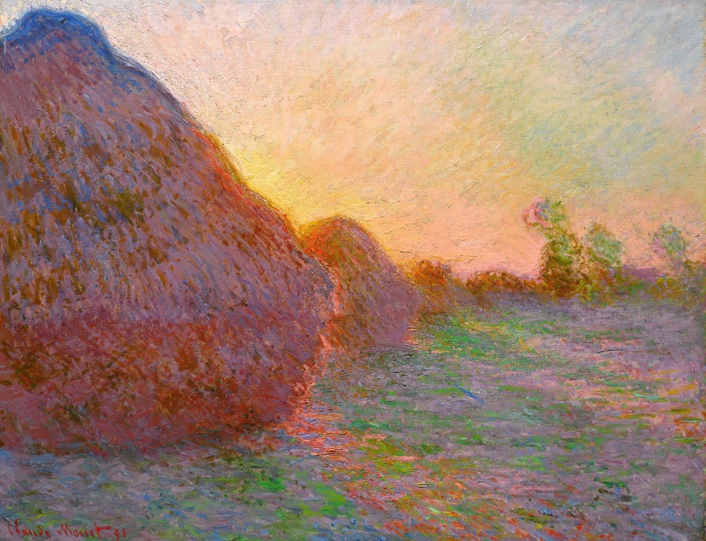
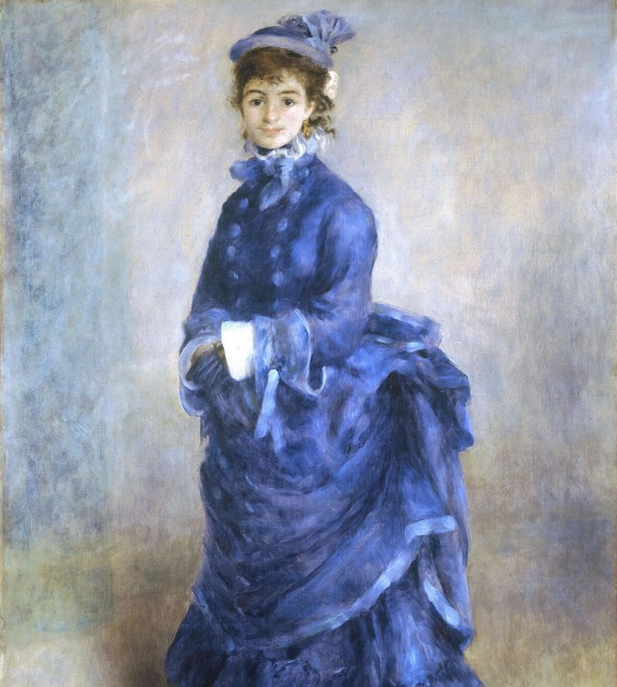
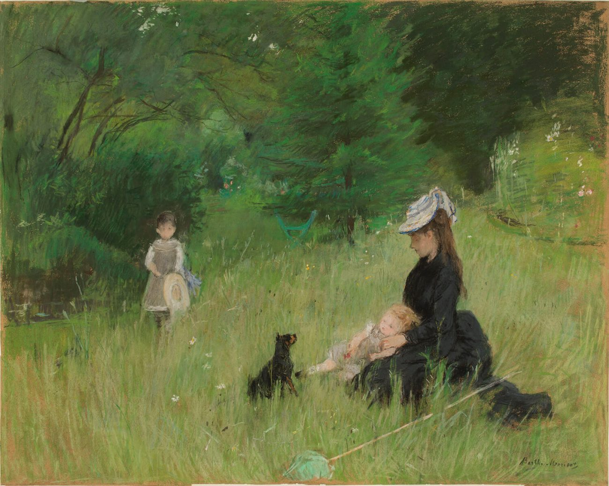
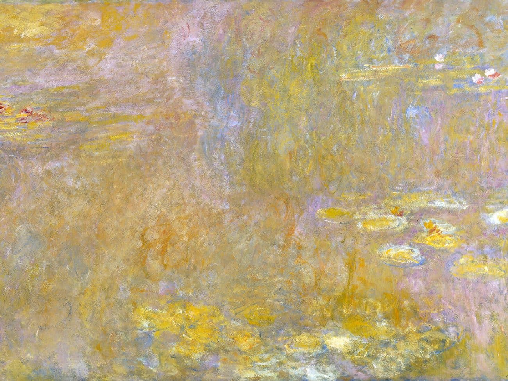
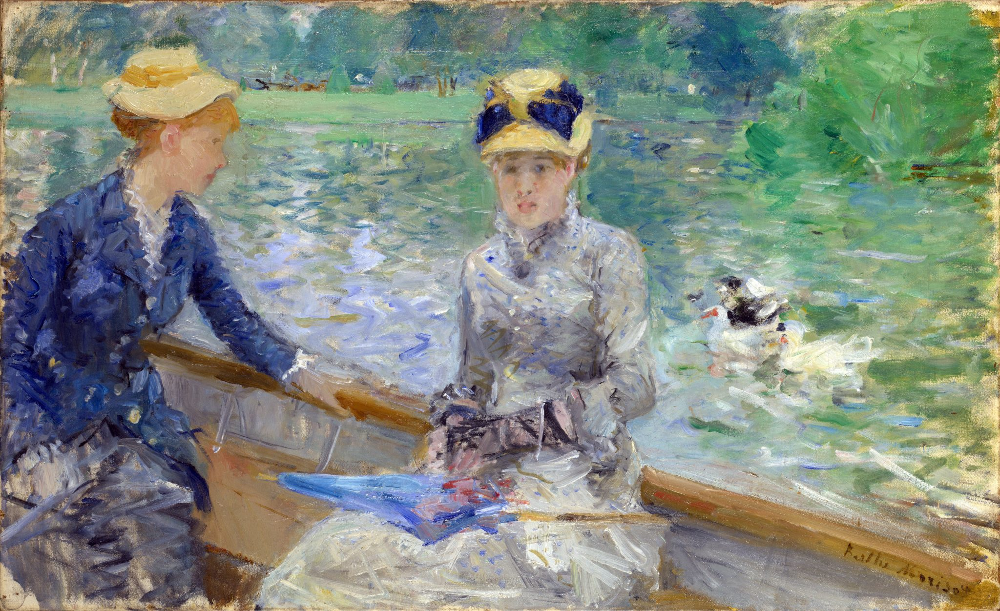

Historia
Fechas importantes
1863
Édouard Manet presenta Le Déjeuner sur l’herbe en el Salón de los Rechazados, desafiando las normas académicas.
1872
Claude Monet pinta Impression, soleil levant, obra que da nombre al movimiento.

1874
Primera exposición impresionista oficial en el antiguo estudio fotográfico de Nadar, ubicado en el Boulevard des Capucines en París, organizada por artistas independientes.
1880
El grupo se fragmenta: algunos artistas evolucionan hacia el posimpresionismo.
1926
Muere Claude Monet, último gran representante del movimiento. Su legado queda en Giverny.
Principales características
- La luz como protagonista:
Los impresionistas buscaban capturar los efectos cambiantes de la luz natural, pintando al aire libre y en distintos momentos del día. - Pinceladas breves y expresivas:
Usaban trazos cortos y colores puros que se fusionaban en el ojo del espectador, creando imágenes vibrantes y dinámicas. - Colores intensos y nuevos pigmentos:
Gracias a avances técnicos, experimentaron con tonos más brillantes y saturados, alejándose de la paleta tradicional. - Teoría del color aplicada:
Reemplazaron el claroscuro por contrastes entre colores complementarios, logrando profundidad y luminosidad sin recurrir al negro. - Preferencia por paisajes y escenas cotidianas:
Pintaban jardines, ríos, cafés y momentos íntimos, buscando lo efímero y lo espontáneo en la vida moderna.





